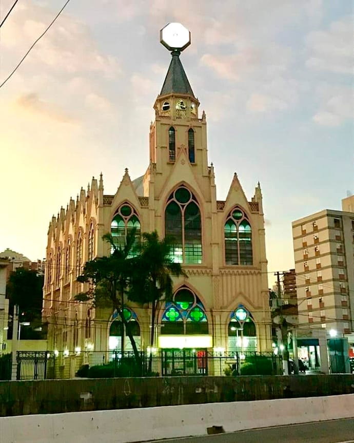

A pergunta que muitos fazem, qual é a historia da Assembleia de Deus Ipiranga???
Pois vou te contar agora:
O missionário Daniel Berg, fundador das Assembleias de Deus no Brasil, identificou a necessidade de expandir a presença assembleiana na capital paulista. Para essa missão, ele designou o missionário Samuel Nystrom. Este, por sua vez, reconhecendo a importância de atuar no bairro do Ipiranga em São Paulo, delegou a responsabilidade a evangelista Vitalino Piro.
A história da igreja teve início com batismos realizados em 29 de junho de 1931.
Em 26 de julho de 1943, o pastor Alfredo Reikdal, enviado pelo missionário Pr. Bruno Skolimowksi, assumiu a direção da igreja. Esse período foi marcado pela II Guerra Mundial e uma recessão econômica no Brasil devido ao conflito. O pastor Reikdal dedicou-se incansavelmente ao trabalho, capacitando pregadores e estabelecendo novas congregações, o que resultou no aumento do número de fiéis.
Em 29 de julho de 1956, o Pr. Reikdal transferiu a sede para o local atual, na Av. Dr. Ricardo Jafet, 214, no bairro do Ipiranga, São Paulo. O templo, em estilo gótico e com um relógio no topo, tornou-se um dos marcos do bairro, sendo atualmente conhecido como "Catedral Nacional da Independência".
Em reconhecimento à história e importância da igreja, a Assembleia Legislativa do Estado de São Paulo aprovou e o então governador João Dória sancionou a Lei Estadual nº 17.314, de 2021, estabelecendo o dia 29 de junho como o "Dia da Assembleia de Deus Ministério no Ipiranga".
Caso queira visitar a Sede principal: